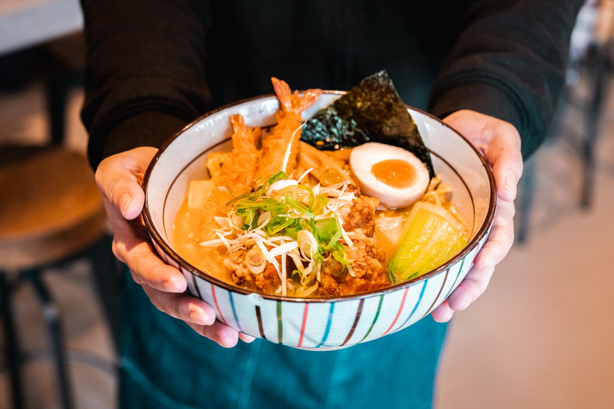

Takumi Ramen Kitchen

Japanese ramen noodle soup
Did you know that Mr. Saeki and Mr. Okada introduced the characteristic Takumi Ramen in Europe 15 years ago?
The story starts in 1995 when Mr. Saeki and Mr. Okada worked together in Amsterdam. Sharing a big dream of opening a Ramen restaurant in Europe someday.
During that period, he came across noodles made in Sapporo and realized this was what he desired.
In 2006, Mr. Saeki brought Mr. Okada over to Germany when Takumi was ready for its grand opening.
Their longtime dream had come true at that moment. The first Takumi restaurant finally opened in Düsseldorf in January 2007.
Since then, its 'Ramen' as Japan Soul Food has been spread and become more popular throughout Munich, Berlin, and Rotterdam up to now.
Unofficial ingredients
- Chicken breasts
- Unsalted butter
- Sesame or vegetable oil
- Fresh ginger, minced
- Fresh garlic, minced
- Soy sauce
- Mirin
- Rich chicken stock
- Dried shitake mushrooms
- Sea salt
- 2 large eggs
- Scallions, sliced
- Packs dried ramen noodles
Instructions
Cook the chicken
- Preheat the oven to 375℉. Season the chicken generously with salt and pepper.
- Melt the butter in a large oven-safe skillet over medium heat. Add the chicken, skin-side down, and cook until the skin is golden brown and releases easily from the pan, about 5-7 minutes. Flip the chicken over and cook for another 4-5 minutes, until golden.
- Transfer the skillet to the oven and roast for 15-20 minutes, until the chicken is cooked through. Remove from the oven, transfer the chicken to a plate, and cover with foil until ready to serve.
Make the ramen broth
- Heat the oil in a large pot over medium heat until shimmering. Add the garlic and ginger, and cook for a few minutes until softened. Add the soy sauce and mirin, and stir to combine. Cook for another minute.
- Add the stock, cover, and bring to a boil. Remove the lid, and let simmer uncovered for 5 minutes, then add the dried mushrooms. Simmer gently for another 10 minutes, and season with salt, to taste.
Make the soft-boiled eggs
- Fill a pot with enough water to cover the eggs, and bring to a boil. Gently lower the eggs (still cold from the fridge) into the boiling water, and let simmer for 7 minutes (for a slightly-runny yolk) or 8 minutes (for a soft, but set-up yolk).
- Meanwhile, fill a large bowl with ice water. When the timer finishes, transfer the eggs to the ice bath to stop the cooking process. Wait at least 5 minutes, or until cool enough to handle, then carefully peel away the shell and slice in half, lengthwise. Set aside until ready to serve.
Assemble the ramen bowls
- Meanwhile, chop the scallions and jalapeño (if using). Slice the chicken into thin pieces. Set aside. When the eggs finish cooking, add the ramen noodles to the boiling water.
- Cook for 2-3 minutes, until soft, then divide the noodles into two large bowls. Add the sliced chicken and the ramen broth. Top with the fresh scallions, jalapeño, and the soft boiled egg. Serve immediately. Enjoy!!